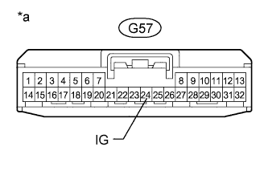

DTC C1882/82 Power Supply Voltage Malfunction |
| DTC Code | DTC Detection Condition | Trouble Area |
| C1882/82 | The IG terminal voltage is 10 V or less or 16 V or higher for 0.5 seconds |
|
| 1.READ VALUE USING INTELLIGENT TESTER (IG POWER SOURCE VOLTAGE) |
Turn the engine switch off.
Connect the intelligent tester to the DLC3.
Turn the engine switch on (IG).
Turn the intelligent tester on.
Enter the following menus: Chassis / KDSS / Data List.
Select the item below in the Data List, and read the value displayed on the intelligent tester.
| Tester Display | Measurement Item/Range | Normal Condition | Diagnostic Note |
| IG Power Source Voltage | IG Power Source Voltage/ Min.: 0.0 V Max.: 25.5 V | Engine switch on (IG): 11 to 14 V | - |
|
| ||||
| OK | |
| 2.RECONFIRM DTC |
Clear the DTCs (Click here).
Check for DTCs (Click here).
| Result | Proceed to |
| DTC is output | A |
| DTC is not output | B |
|
| ||||
| A | ||
| ||
| 3.CHECK HARNESS AND CONNECTOR (IG TERMINAL) |
Disconnect the stabilizer control ECU connector.
|  |
Measure the voltage according to the value(s) in the table below.
| Tester Connection | Switch Condition | Specified Condition |
| G57-24 (IG) - Body ground | Engine switch on (IG) | 11 to 14 V |
| *a | Front view of wire harness connector (to Stabilizer Control ECU) |
|
| ||||
| OK | |
| 4.CHECK HARNESS AND CONNECTOR (GND TERMINAL) |
Disconnect the stabilizer control ECU connector.
Measure the resistance according to the value(s) in the table below.
| Tester Connection | Condition | Specified Condition |
| G57-22 (GND) - Body ground | Always | Below 1 Ω |
|
| ||||
| OK | ||
| ||